SegmentMaker¶
-
class
baca.tools.SegmentMaker.SegmentMaker(allow_empty_selections=None, breaks=None, clock_time_override=None, color_octaves=None, color_out_of_range_pitches=True, color_repeat_pitch_classes=True, do_not_check_persistence=None, do_not_include_layout_ly=None, fermata_measure_staff_line_count=None, final_bar_line=None, final_markup=None, final_markup_extra_offset=None, first_measure_number=None, first_segment=None, ignore_out_of_range_pitches=None, ignore_repeat_pitch_classes=None, ignore_unpitched_notes=None, ignore_unregistered_pitches=None, include_nonfirst_segment_stylesheet=None, instruments=None, last_segment=None, magnify_staves=None, margin_markups=None, measures_per_stage=None, metronome_mark_measure_map=None, metronome_mark_stem_height=1, metronome_marks=None, mmspanner_right_broken=None, mmspanner_right_padding=0, score_template=None, segment_directory=None, skip_wellformedness_checks=None, skips_instead_of_rests=None, spacing=None, test_container_identifiers=None, time_signatures=None, transpose_score=None, validate_measure_count=None, validate_stage_count=None)¶ Segment-maker.
>>> from abjad import rhythmmakertools as rhythmos
>>> maker = baca.SegmentMaker( ... ignore_unpitched_notes=True, ... score_template=baca.SingleStaffScoreTemplate(), ... time_signatures=[(4, 8), (3, 8), (4, 8), (3, 8)], ... )
>>> maker( ... 'MusicVoice', ... baca.make_even_runs(), ... )
>>> lilypond_file = maker.run(environment='docs') >>> abjad.show(lilypond_file, strict=89)

Special methods
-
__call__(scopes, *commands)¶ Wraps each command in commands with each scope in scopes.
>>> maker = baca.SegmentMaker( ... score_template=baca.SingleStaffScoreTemplate(), ... time_signatures=[(4, 8), (3, 8), (4, 8), (3, 8)], ... )
>>> maker( ... 'MusicVoice', ... baca.make_even_runs(), ... baca.label(abjad.label().with_indices()), ... )
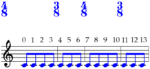>>> lilypond_file = maker.run(environment='docs') >>> abjad.show(lilypond_file, strict=89)
Commands may be grouped into lists:
>>> maker = baca.SegmentMaker( ... score_template=baca.SingleStaffScoreTemplate(), ... time_signatures=[(4, 8), (3, 8), (4, 8), (3, 8)], ... )
>>> commands = [] >>> commands.append(baca.make_even_runs()) >>> commands.append(baca.label(abjad.label().with_indices()))
>>> maker( ... 'MusicVoice', ... commands, ... )
>>> lilypond_file = maker.run(environment='docs') >>> abjad.show(lilypond_file, strict=89)
Raises exception on noncommand input:
>>> maker( ... 'MusicVoice', ... 'text', ... ) Traceback (most recent call last): File "<stdin>", line 3, in <module> File "/Users/trevorbaca/baca/baca/tools/SegmentMaker.py", line 876, in __call__ raise Exception(message) Exception: Neither command nor list of commands: textRaises exception on unknown voice name:
>>> maker( ... 'PercussionVoice', ... baca.make_repeated_duration_notes([(1, 4)]), ... ) Traceback (most recent call last): File "<stdin>", line 3, in <module> File "/Users/trevorbaca/baca/baca/tools/SegmentMaker.py", line 880, in __call__ raise Exception(f'unknown voice name {scope.voice_name!r}.') Exception: unknown voice name 'PercussionVoice'.
Return type: None
-
(SegmentMaker).__eq__(expr)¶ Is true if expr is a segment-maker with equivalent properties.
-
(AbjadObject).__format__(format_specification='')¶ Formats Abjad object.
Set format_specification to ‘’ or ‘storage’. Interprets ‘’ equal to ‘storage’.
Returns string.
-
(SegmentMaker).__hash__()¶ Hashes segment-maker.
-
(SegmentMaker).__illustrate__(**keywords)¶ Illustrates segment-maker.
Return type: LilyPondFile
-
(AbjadObject).__repr__()¶ Gets interpreter representation of Abjad object.
Returns string.
Methods
-
run(deactivate=None, environment=None, metadata=None, midi=None, previous_metadata=None, remove=None, segment_directory=None)¶ Runs segment-maker.
Parameters: - deactivate (
Optional[List[str]]) – tags to deactivate in LilyPond file output. - environment (
Optional[str]) – stylesheet path control parameter. Leave set to none to render segments in real score. Set to'docs'for API examples. Set to'external'to debug API examples in a separate file. - metadata (
Optional[OrderedDict]) – metadata found in current segment directory. - midi (
Optional[bool]) – set to true to generate MIDI output. - previous_metadata (
Optional[OrderedDict]) – metadata found in previous segment directory. - remove (
Optional[List[str]]) – tags to remove in LilyPond file output. - segment_directory (
Optional[Path]) – path providing access to current segment directory.
Return type: LilyPondFile- deactivate (
Read-only properties
-
allow_empty_selections¶ Is true when segment allows empty selectors.
Otherwise segment raises exception on empty selectors.
Return type: Optional[bool]
-
breaks¶ Gets breaks.
Return type: Optional[BreakMeasureMap]
-
color_octaves¶ Is true when segment-maker colors octaves.
Colors octaves:
>>> maker = baca.SegmentMaker( ... color_octaves=True, ... score_template=baca.StringTrioScoreTemplate(), ... spacing=baca.minimum_duration((1, 31)), ... time_signatures=[(6, 16), (6, 16)], ... )
>>> music_maker = baca.MusicMaker() >>> contribution = music_maker( ... 'ViolinMusicVoice', ... [[2, 4, 5, 7, 9, 11]], ... baca.flags(), ... ) >>> maker( ... ('ViolinMusicVoice', 1), ... baca.rhythm(contribution['ViolinMusicVoice']), ... )
>>> contribution = music_maker( ... 'CelloMusicVoice', ... [[-3, -5, -7, -8, -10, -12]], ... baca.flags(), ... ) >>> maker( ... ('CelloMusicVoice', 1), ... baca.rhythm(contribution['CelloMusicVoice']), ... )
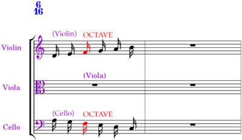>>> lilypond_file = maker.run(environment='docs') >>> abjad.setting(lilypond_file['Score']).auto_beaming = False >>> abjad.show(lilypond_file, strict=89)
Defaults to none.
Set to true, false or none.
Returns true, false or none.
Return type: Optional[bool]
-
color_out_of_range_pitches¶ Is true when segment-maker colors out-of-range pitches.
Colors out-of-range pitches:
>>> music_maker = baca.MusicMaker()
>>> collection_lists = [ ... [[4]], ... [[-12, 2, 3, 5, 8, 9, 0]], ... [[11]], ... [[10, 7, 9, 10, 0, 5]], ... ] >>> figures, time_signatures = [], [] >>> for i, collections in enumerate(collection_lists): ... contribution = music_maker( ... 'Voice 1', ... collections, ... baca.flags(), ... ) ... figures.append(contribution['Voice 1']) ... time_signatures.append(contribution.time_signature) ... >>> figures_ = [] >>> for figure in figures: ... figures_.extend(figure) ... >>> figures = abjad.select(figures_)
>>> maker = baca.SegmentMaker( ... color_out_of_range_pitches=True, ... ignore_out_of_range_pitches=True, ... score_template=baca.SingleStaffScoreTemplate(), ... spacing=baca.minimum_duration((1, 24)), ... time_signatures=time_signatures, ... ) >>> maker( ... ('MusicVoice', 1), ... baca.instrument(abjad.Violin()), ... baca.rhythm(figures), ... )
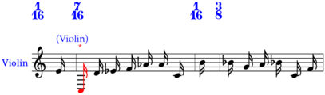>>> lilypond_file = maker.run(environment='docs') >>> abjad.setting(lilypond_file['Score']).auto_beaming = False >>> abjad.show(lilypond_file, strict=89)
Defaults to none.
Set to true, false or none.
Returns true, false or none.
Return type: Optional[bool]
-
color_repeat_pitch_classes¶ Is true when segment-maker colors repeat pitch-classes.
Colors repeat pitch-classes:
>>> music_maker = baca.MusicMaker()
>>> collection_lists = [ ... [[4]], ... [[6, 2, 3, 5, 9, 9, 0]], ... [[11]], ... [[10, 7, 9, 12, 0, 5]], ... ] >>> figures, time_signatures = [], [] >>> for i, collections in enumerate(collection_lists): ... contribution = music_maker( ... 'Voice 1', ... collections, ... baca.flags(), ... ) ... figures.append(contribution['Voice 1']) ... time_signatures.append(contribution.time_signature) ... >>> figures_ = [] >>> for figure in figures: ... figures_.extend(figure) ... >>> figures = abjad.select(figures_)
>>> maker = baca.SegmentMaker( ... color_repeat_pitch_classes=True, ... score_template=baca.SingleStaffScoreTemplate(), ... spacing=baca.HorizontalSpacingSpecifier( ... minimum_duration=abjad.Duration(1, 24), ... ), ... time_signatures=time_signatures, ... ) >>> maker( ... ('MusicVoice', 1), ... baca.rhythm(figures), ... )
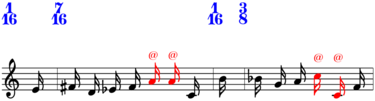>>> lilypond_file = maker.run(environment='docs') >>> abjad.setting(lilypond_file['Score']).auto_beaming = False >>> abjad.show(lilypond_file, strict=89)
Defaults to none.
Set to true, false or none.
Returns true, false or none.
Return type: Optional[bool]
-
do_not_check_persistence¶ Is true when segment-maker does not check persistent indicators.
Return type: Optional[bool]
-
do_not_include_layout_ly¶ Is true when segment-maker does not include layout.ly.
Return type: Optional[bool]
-
final_bar_line¶ Gets final bar line.
Nonlast segment sets final bar line to
'|'by default:>>> maker = baca.SegmentMaker( ... ignore_unpitched_notes=True, ... score_template=baca.SingleStaffScoreTemplate(), ... time_signatures=[(4, 8), (3, 8), (4, 8), (3, 8)], ... )
>>> maker( ... 'MusicVoice', ... baca.make_even_runs(), ... )
>>> lilypond_file = maker.run(environment='docs') >>> abjad.show(lilypond_file, strict=89)
Override nonlast segment final bar line like this:
>>> maker = baca.SegmentMaker( ... final_bar_line='||', ... ignore_unpitched_notes=True, ... score_template=baca.SingleStaffScoreTemplate(), ... time_signatures=[(4, 8), (3, 8), (4, 8), (3, 8)], ... )
>>> maker( ... 'MusicVoice', ... baca.make_even_runs(), ... )
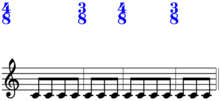>>> lilypond_file = maker.run(environment='docs') >>> abjad.show(lilypond_file, strict=89)
Last segment in score sets final bar line to
'|.'by default:>>> maker = baca.SegmentMaker( ... ignore_unpitched_notes=True, ... last_segment=True, ... score_template=baca.SingleStaffScoreTemplate(), ... time_signatures=[(4, 8), (3, 8), (4, 8), (3, 8)], ... )
>>> maker( ... 'MusicVoice', ... baca.make_even_runs(), ... )
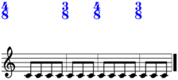>>> lilypond_file = maker.run(environment='docs') >>> abjad.show(lilypond_file, strict=89)
Override last segment final bar line like this:
>>> maker = baca.SegmentMaker( ... final_bar_line='||', ... ignore_unpitched_notes=True, ... score_template=baca.SingleStaffScoreTemplate(), ... time_signatures=[(4, 8), (3, 8), (4, 8), (3, 8)], ... )
>>> maker( ... 'MusicVoice', ... baca.make_even_runs(), ... )
>>> metadata = {'segment_count': 1} >>> lilypond_file = maker.run( ... environment='docs', ... metadata=metadata, ... ) >>> abjad.show(lilypond_file, strict=89)
Return type: Union[bool,str,None]
-
final_markup¶ Gets final markup.
Sets final markup:
>>> maker = baca.SegmentMaker( ... final_bar_line='|.', ... final_markup=(['Madison, WI'], ['October 2016']), ... final_markup_extra_offset=(-9, -2), ... ignore_unpitched_notes=True, ... score_template=baca.SingleStaffScoreTemplate(), ... time_signatures=[(4, 8), (3, 8), (4, 8), (3, 8)], ... )
>>> maker( ... 'MusicVoice', ... baca.make_even_runs(), ... )
>>> lilypond_file = maker.run(environment='docs') >>> abjad.show(lilypond_file, strict=89)

Return type: Optional[tuple]
-
final_markup_extra_offset¶ Gets final markup extra offset.
Return type: Optional[Tuple[Union[int,float],Union[int,float]]]
-
ignore_out_of_range_pitches¶ Is true when segment ignores out-of-range pitches.
Return type: Optional[bool]
-
ignore_repeat_pitch_classes¶ Is true when segment ignores repeat pitch-classes.
Return type: Optional[bool]
-
ignore_unpitched_notes¶ Is true when segment ignores unpitched notes.
Ignores unpitched notes:
>>> maker = baca.SegmentMaker( ... ignore_unpitched_notes=True, ... score_template=baca.SingleStaffScoreTemplate(), ... time_signatures=[(4, 8), (3, 8), (4, 8), (3, 8)], ... )
>>> maker( ... 'MusicVoice', ... baca.make_even_runs(), ... )
>>> lilypond_file = maker.run(environment='docs') >>> abjad.show(lilypond_file, strict=89)
Colors unpitched notes:
>>> maker = baca.SegmentMaker( ... score_template=baca.SingleStaffScoreTemplate(), ... time_signatures=[(4, 8), (3, 8), (4, 8), (3, 8)], ... )
>>> maker( ... 'MusicVoice', ... baca.make_even_runs(), ... )
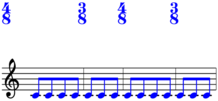>>> lilypond_file = maker.run(environment='docs') >>> abjad.show(lilypond_file, strict=89)
Return type: Optional[bool]
-
ignore_unregistered_pitches¶ Is true when segment ignores unregistered pitches.
Ignores unregistered pitches:
>>> music_maker = baca.MusicMaker( ... baca.PitchFirstRhythmCommand( ... rhythm_maker=baca.PitchFirstRhythmMaker( ... acciaccatura_specifiers=[ ... baca.AcciaccaturaSpecifier(), ... ], ... talea=rhythmos.Talea( ... counts=[3], ... denominator=16, ... ), ... ), ... ), ... color_unregistered_pitches=True, ... denominator=8, ... )
>>> collection_lists = [ ... [[4]], ... [[6, 2, 3, 5, 9, 8, 0]], ... [[11]], ... [[10, 7, 9, 8, 0, 5]], ... ] >>> figures, time_signatures = [], [] >>> for collections in collection_lists: ... contribution = music_maker('Voice 1', collections) ... figures.append(contribution['Voice 1']) ... time_signatures.append(contribution.time_signature) ... >>> figures_ = [] >>> for figure in figures: ... figures_.extend(figure) ... >>> figures = abjad.select(figures_)
>>> maker = baca.SegmentMaker( ... ignore_unregistered_pitches=True, ... score_template=baca.SingleStaffScoreTemplate(), ... spacing=baca.minimum_duration((1, 24)), ... time_signatures=time_signatures, ... ) >>> maker( ... 'MusicVoice', ... baca.rhythm(figures), ... )
>>> lilypond_file = maker.run(environment='docs') >>> score = lilypond_file[abjad.Score] >>> abjad.override(score).spacing_spanner.strict_grace_spacing = False >>> abjad.override(score).spacing_spanner.strict_note_spacing = False >>> abjad.show(lilypond_file, strict=89)
Colors unregistered pitches:
>>> music_maker = baca.MusicMaker( ... baca.PitchFirstRhythmCommand( ... rhythm_maker=baca.PitchFirstRhythmMaker( ... acciaccatura_specifiers=[ ... baca.AcciaccaturaSpecifier(), ... ], ... talea=rhythmos.Talea( ... counts=[3], ... denominator=16, ... ), ... ), ... ), ... color_unregistered_pitches=True, ... denominator=8, ... )
>>> collection_lists = [ ... [[4]], ... [[6, 2, 3, 5, 9, 8, 0]], ... [[11]], ... [[10, 7, 9, 8, 0, 5]], ... ] >>> figures, time_signatures = [], [] >>> for collections in collection_lists: ... contribution = music_maker('Voice 1', collections) ... figures.append(contribution['Voice 1']) ... time_signatures.append(contribution.time_signature) ... >>> figures_ = [] >>> for figure in figures: ... figures_.extend(figure) ... >>> figures = abjad.select(figures_)
>>> maker = baca.SegmentMaker( ... score_template=baca.SingleStaffScoreTemplate(), ... spacing=baca.minimum_duration((1, 24)), ... time_signatures=time_signatures, ... ) >>> maker( ... 'MusicVoice', ... baca.rhythm(figures), ... )
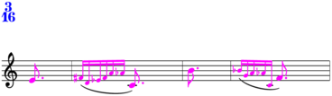>>> lilypond_file = maker.run(environment='docs') >>> score = lilypond_file[abjad.Score] >>> abjad.override(score).spacing_spanner.strict_grace_spacing = False >>> abjad.override(score).spacing_spanner.strict_note_spacing = False >>> abjad.show(lilypond_file, strict=89)
Return type: Optional[bool]
-
include_nonfirst_segment_stylesheet¶ Is true when segment includes nonfirst segment stylesheet.
Return type: Optional[bool]
-
last_segment¶ Is true when composer declares segment to be last in score.
Return type: Optional[bool]
-
magnify_staves¶ Gets staff magnification.
Return type: Union[Multiplier,Tuple[Multiplier,Tag],None]
-
manifests¶ Gets manifests.
Return type: OrderedDict
-
metadata¶ Gets segment metadata.
>>> metadata = {} >>> metadata['persistent_indicators'] = {} >>> metadata['persistent_indicators']['MusicStaff'] = [ ... abjad.Momento( ... context='MusicVoice', ... prototype='abjad.Clef', ... value='alto', ... ) ... ] >>> metadata['segment_number'] = 1 >>> maker = baca.SegmentMaker( ... score_template=baca.SingleStaffScoreTemplate(), ... time_signatures=[(4, 8), (3, 8), (4, 8), (3, 8)], ... )
>>> lilypond_file = maker.run( ... environment='docs', ... previous_metadata=metadata, ... )
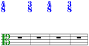>>> abjad.show(lilypond_file, strict=89)
>>> abjad.f(maker.metadata, strict=89) abjad.OrderedDict( [ ( 'alive_during_segment', [ 'Score', 'GlobalContext', 'GlobalSkips', 'MusicContext', 'MusicStaff', 'MusicVoice', ], ), ('first_measure_number', 1), ('last_measure_number', 4), ( 'persistent_indicators', abjad.OrderedDict( [ ( 'MusicStaff', [ abjad.Momento( context='MusicVoice', prototype='abjad.Clef', value='alto', ), ], ), ( 'Score', [ abjad.Momento( context='GlobalSkips', prototype='abjad.TimeSignature', value='3/8', ), ], ), ] ), ), ('segment_number', 2), ( 'sounds_during_segment', abjad.OrderedDict( [ ('MusicVoice', False), ] ), ), ( 'time_signatures', ['4/8', '3/8', '4/8', '3/8'], ), ] )
Return type: OrderedDict
-
metronome_mark_measure_map¶ Gets metronome mark measure map.
With metronome mark measure map:
>>> metronome_marks = abjad.OrderedDict() >>> metronome_marks['90'] = abjad.MetronomeMark((1, 4), 90) >>> maker = baca.SegmentMaker( ... ignore_unpitched_notes=True, ... metronome_mark_measure_map=baca.MetronomeMarkMeasureMap([ ... (1, metronome_marks['90']), ... ]), ... metronome_marks=metronome_marks, ... score_template=baca.SingleStaffScoreTemplate(), ... time_signatures=[(4, 8), (3, 8), (4, 8), (3, 8)], ... )
>>> maker( ... 'MusicVoice', ... baca.make_even_runs(), ... )
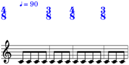>>> lilypond_file = maker.run(environment='docs') >>> abjad.show(lilypond_file, strict=89)
Return type: Optional[MetronomeMarkMeasureMap]
-
mmspanner_right_broken¶ Is true when metronome mark spanner is right-broken.
Return type: Optional[bool]
-
mmspanner_right_padding¶ Gets metronome mark spanner right padding.
Return type: Union[int,float,Tuple[Union[int,float],Tag]]
-
score_template¶ Gets score template.
Gets score template:
>>> maker = baca.SegmentMaker( ... score_template=baca.SingleStaffScoreTemplate(), ... )
>>> maker.score_template SingleStaffScoreTemplate()
Return type: Optional[ScoreTemplate]
-
skip_wellformedness_checks¶ Is true when segment skips wellformedness checks.
Return type: Optional[bool]
-
skips_instead_of_rests¶ Is true when segment fills empty measures with skips.
Fills empty measures with multimeasure rests:
>>> maker = baca.SegmentMaker( ... score_template=baca.SingleStaffScoreTemplate(), ... time_signatures=[(4, 8), (3, 8), (4, 8), (3, 8)], ... )
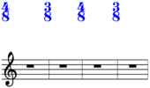>>> lilypond_file = maker.run(environment='docs') >>> abjad.show(lilypond_file, strict=89)
Fills empty measures with skips:
>>> maker = baca.SegmentMaker( ... score_template=baca.SingleStaffScoreTemplate(), ... skips_instead_of_rests=True, ... time_signatures=[(4, 8), (3, 8), (4, 8), (3, 8)], ... )
>>> lilypond_file = maker.run(environment='docs') >>> abjad.show(lilypond_file, strict=89)
Return type: Optional[bool]
-
spacing¶ Gets spacing.
Return type: Optional[HorizontalSpacingSpecifier]
-
stage_count¶ Gets stage count.
Defined equal to 1 when self.measures_per_stage is none.
Return type: int
-
test_container_identifiers¶ Is true when segment-maker adds container identifiers in docs environment.
Return type: Optional[bool]
-
transpose_score¶ Is true when segment transposes score.
Transposes score:
>>> instruments = abjad.OrderedDict() >>> instruments['clarinet'] = abjad.ClarinetInBFlat() >>> maker = baca.SegmentMaker( ... instruments=instruments, ... score_template=baca.SingleStaffScoreTemplate(), ... time_signatures=[(4, 8), (3, 8), (4, 8), (3, 8)], ... transpose_score=True, ... )
>>> maker( ... 'MusicVoice', ... baca.instrument(instruments['clarinet']), ... baca.make_even_runs(), ... baca.pitches('E4 F4'), ... )
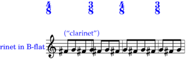>>> lilypond_file = maker.run(environment='docs') >>> abjad.show(lilypond_file, strict=89)
Does not transpose score:
>>> instruments = abjad.OrderedDict() >>> instruments['clarinet'] = abjad.ClarinetInBFlat() >>> maker = baca.SegmentMaker( ... instruments=instruments, ... score_template=baca.SingleStaffScoreTemplate(), ... time_signatures=[(4, 8), (3, 8), (4, 8), (3, 8)], ... transpose_score=False, ... )
>>> maker( ... 'MusicVoice', ... baca.instrument(instruments['clarinet']), ... baca.make_even_runs(), ... baca.pitches('E4 F4'), ... )
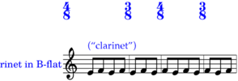>>> lilypond_file = maker.run(environment='docs') >>> abjad.show(lilypond_file, strict=89)
Return type: Optional[bool]
-
validate_measure_count¶ Gets validate measure count.
Raises exception when measures found do not equal validate count:
>>> maker = baca.SegmentMaker( ... score_template=baca.SingleStaffScoreTemplate(), ... time_signatures=[(4, 8), (3, 8), (4, 8), (3, 8)], ... validate_measure_count=6, ... ) Traceback (most recent call last): File "<stdin>", line 4, in <module> File "/Users/trevorbaca/baca/baca/tools/SegmentMaker.py", line 411, in __init__ self._validate_measure_count_() File "/Users/trevorbaca/baca/baca/tools/SegmentMaker.py", line 3042, in _validate_measure_count_ raise Exception(message) Exception: found 4 measures (not 6).
Return type: Optional[int]
-
voice_metadata¶ Gets voice metadata.
Return type: OrderedDict
-
wrappers¶ Gets wrappers.
Return type: List[CommandWrapper]
-